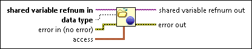

Open Variable Connection Function
Owning Palette: Shared Variable Node, VI, and Functions
Requires: Base Development System
Opens a connection to a shared variable.
You cannot buffer data that you read or write with this function. To enable buffering, use the Open and Verify Variable Connection or Open Variable Connection in Background function instead.

 Add to the block diagram Add to the block diagram |
 Find on the palette Find on the palette |